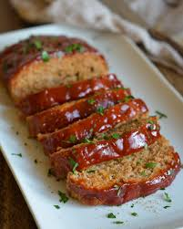

Meatloaf

Description
This is a traditional meatloaf recipe. It is very basic and you can add your own flair to it very easily. Feel free to substitute a portion of the ground beef for any other ground meat you may wish.
Meatloaf is an easy and filling meal that is beloved by most. This includes a recipe for a ketchup sauce to go on top that adds a sweet and tangy crust to your meatloaf.
Ingredients
Meatloaf
- 2LBS Ground Beef
- 1 Onion, diced and caramelized
- 3TBSP Ketchup
- 3/4cup breadcrumbs
- 1/3cup milk
- 2 Eggs
- Season to Taste
Sauce
- 3/4cup Ketchup
- 1 1/2tsp White Vinegar
- 2 1/2TBSP Brown Sugar, can be light or dark
- 1tsp Garlic Powder
- 1/2tsp Onion Powder
- Salt and Pepper to taste
Steps
You should make the meatloaf first and then the sauce to put on top.
Meatloaf
- Add ground beef, caramelized onion, ketchup, breadcrumbs, milk and eggs to a large mixing bowl.
- Add seasonings to taste. I recommend salt, pepper, garlic, and italian seasoning
- Use hands to thoroughly mix the ingredients together.
- Press mixture into a 9" x 5" loaf pan
Sauce
- Whisk together ketchup and white vinegar
- Add brown sugar, garlic and onion powder, and salt and pepper
- Whisk together
Finishing Steps
- Preheat oven to 375°F
- Pour ketchup mixture over meatloaf
- Cover with foil
- Bake for 45 mins to an hour, removing foil after 30 mins
- Let rest for 15 mins before cutting and serving
There you have it, a delicious meatloaf that pairs well with mashed potatoes and most vegetables